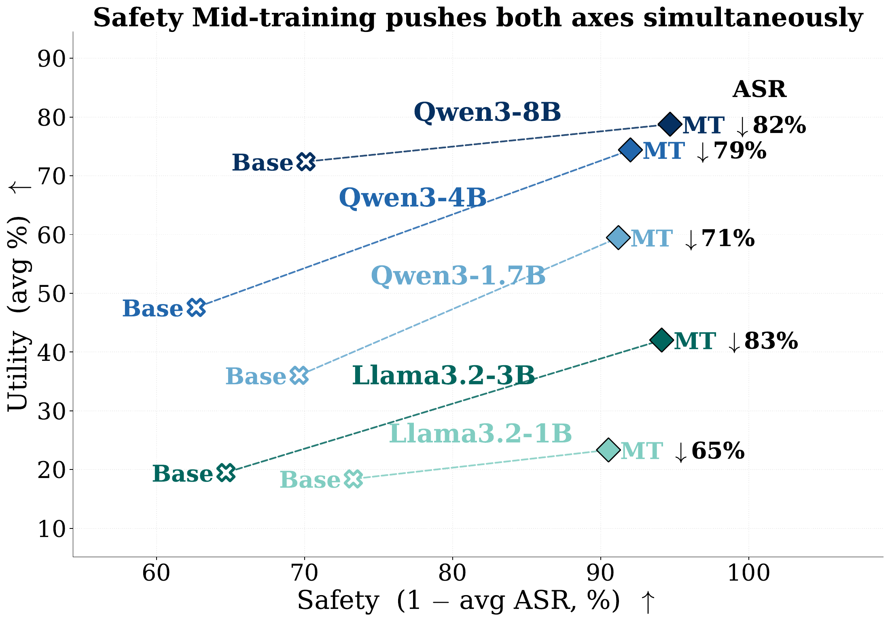
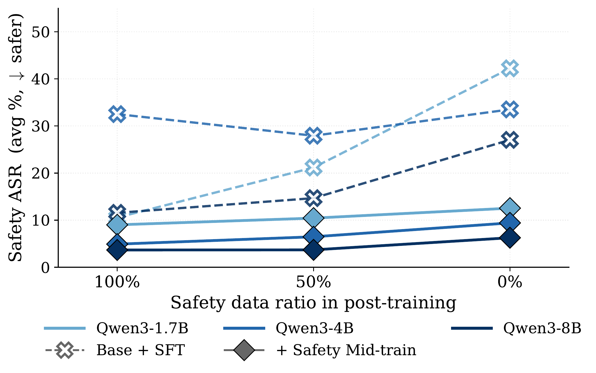
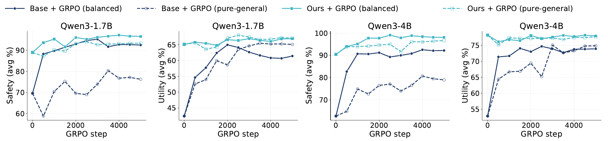
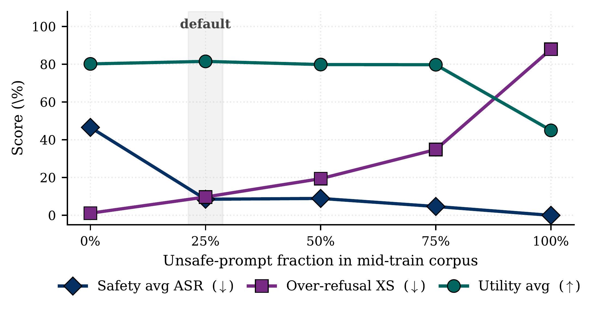

Code
Code Datasets
DatasetsBefore supervised fine-tuning, safety mid-training improves both safety and utility at every Qwen3 scale.
Safety alignment for large language models (LLMs) is primarily performed during post-training, while recent work has also begun incorporating safety data into pre-training. Yet safety can degrade when later training no longer includes safety data, and gains in safety often come at the cost of general capability. This tension suggests that safety and general reasoning should not be treated as separate training goals. We instead view safety as an LLM capability that can be learned through a reasoning structure shared with general tasks. Both require the model to understand intent or task goals, apply relevant knowledge, and reason about potential consequences. We introduce safety mid-training, a stage between pre-training and post-training that jointly develops safety and general reasoning through this shared structure. Given safety and utility prompts, the base model generates structured documents and reasoning traces that are then used for mid-training. Safety mid-training reduces average attack success rate (ASR) by 72% to 81% relative to Qwen3-1.7B, 4B, and 8B base models, while also improving general capability. The benefits persist through subsequent post-training. After general-only SFT, mid-trained models largely retain their safety, achieving lower ASR than the baselines without sacrificing general capability. They also retain safety under general-only GRPO without safety rewards, while subsequent RL reaches a better safety-utility frontier when initialized from the mid-trained models. Together, these results suggest that learning safety and general reasoning within a shared mid-training stage can reduce the safety-utility trade-off and make safety more robust to subsequent training.
Safety and general tasks both require the model to understand intent or task goals, apply relevant knowledge, and reason about possible consequences. Safety mid-training learns these abilities together by organizing both types of examples into structured documents and reasoning traces.
For each prompt, the base model first generates a document that brings together the information needed for a response. It then uses the document and reference answer to generate a reasoning trace and a final answer. Qwen3-32B evaluates the candidates for faithfulness, coherence, and consistency with the reference answer and safety label. Accepted candidates pass the rubric checks and receive a quality score of at least 4; failed candidates can be resampled using the judge's feedback.
The accepted documents and reasoning records are shuffled together for continued training of the base model. By learning the knowledge and reasoning behind safe responses alongside general tasks, the model develops safety as part of its broader capabilities. The resulting model is then used as the starting point for SFT or GRPO.
Before supervised fine-tuning, safety mid-training improves both safety and utility at every Qwen3 scale.
| Model | Base ASR | Ours ASR | Base Utility | Ours Utility |
|---|---|---|---|---|
| Qwen3-1.7B | 30.4 | 8.4 | 29.8 | 58.6 |
| Qwen3-4B | 34.1 | 6.6 | 47.6 | 73.1 |
| Qwen3-8B | 25.4 | 4.9 | 70.3 | 77.1 |
Lower ASR is better; higher utility is better. Scores are percentages.
We consider nine safety and nine utility benchmarks. Because WildJailbreak and BeaverTails share benchmark sources with the mid-training safety data, and GSM8K and MATH-500 share sources with the general data, they are excluded from the main comparison averages below. Complete per-benchmark results are available in the paper's appendix. The safety-utility, SFT-mixture, and schema plots show the paper's full-suite averages.

After balanced SFT, our models achieve the lowest average ASR across the Qwen3 scales, with higher or comparable general capability. When SFT uses only general data, they retain substantially more safety than the baselines and achieve the highest utility at each scale.
The Qwen3-4B comparison below illustrates this pattern. Removing safety examples from SFT raises ASR substantially for Safety Pretraining (SP) and Alignment Pretraining (AP), while the change is much smaller for Ours and utility is maintained.
| Method | Balanced ASR ↓ | Balanced Utility ↑ | General-only ASR ↓ | General-only Utility ↑ |
|---|---|---|---|---|
| Base + SFT (Distill Sonnet-4.6) | 22.8 | 68.1 | 29.1 | 67.8 |
| Base + SFT | 10.8 | 65.6 | 13.6 | 59.4 |
| SP + SFT | 7.7 | 73.8 | 17.3 | 74.6 |
| AP + SFT | 7.3 | 73.7 | 14.5 | 73.3 |
| Ours + SFT | 5.5 | 74.9 | 7.6 | 74.9 |
SP uses Safety Pretraining data; AP uses the safety mid-training data from Alignment Pretraining. General-only SFT contains no safety examples.
| Model | Method | Balanced ASR ↓ | Balanced Utility ↑ | Safety-only ASR ↓ | Safety-only Utility ↑ | General-only ASR ↓ | General-only Utility ↑ |
|---|---|---|---|---|---|---|---|
| Qwen3-1.7B | Base + SFT (Distill Sonnet-4.6) | 17.2 | 60.0 | 8.0 | 62.0 | 37.3 | 59.1 |
| Qwen3-1.7B | Base + SFT | 17.2 | 52.0 | 18.7 | 51.9 | 26.3 | 51.1 |
| Qwen3-1.7B | SP + SFT | 12.4 | 61.7 | 9.2 | 60.5 | 37.1 | 59.8 |
| Qwen3-1.7B | AP + SFT | 12.3 | 61.1 | 9.5 | 58.8 | 28.0 | 60.7 |
| Qwen3-1.7B | Ours + SFT | 8.9 | 60.9 | 7.4 | 61.2 | 11.2 | 61.7 |
| Qwen3-4B | Base + SFT (Distill Sonnet-4.6) | 22.8 | 68.1 | 26.8 | 71.0 | 29.1 | 67.8 |
| Qwen3-4B | Base + SFT | 10.8 | 65.6 | 9.9 | 66.2 | 13.6 | 59.4 |
| Qwen3-4B | SP + SFT | 7.7 | 73.8 | 4.8 | 73.1 | 17.3 | 74.6 |
| Qwen3-4B | AP + SFT | 7.3 | 73.7 | 6.0 | 72.0 | 14.5 | 73.3 |
| Qwen3-4B | Ours + SFT | 5.5 | 74.9 | 4.5 | 75.3 | 7.6 | 74.9 |
| Qwen3-8B | Base + SFT (Distill Sonnet-4.6) | 10.5 | 78.3 | 7.0 | 77.6 | 20.4 | 77.6 |
| Qwen3-8B | Base + SFT | 12.6 | 73.6 | 9.2 | 72.7 | 11.6 | 70.7 |
| Qwen3-8B | SP + SFT | 5.0 | 75.0 | 4.0 | 74.8 | 15.9 | 76.3 |
| Qwen3-8B | AP + SFT | 4.6 | 76.0 | 4.5 | 75.7 | 18.0 | 76.8 |
| Qwen3-8B | Ours + SFT | 3.4 | 78.1 | 3.1 | 78.8 | 5.1 | 78.2 |

Safety mid-training gives GRPO a stronger starting point and leads to better final safety and utility. With balanced safety and general data, the advantage remains throughout training on both Qwen3-1.7B and Qwen3-4B.
General-only GRPO uses neither safety prompts nor safety rewards. In this setting, mid-trained models retain much more of their safety than base models. On Qwen3-4B, moving from balanced to general-only GRPO reduces safety by 13.2 points for the base model, compared with 1.4 points for Ours, with little change in utility. This shows that the safety capability learned during mid-training remains effective as RL focuses on general tasks.

The same pipeline improves safety and utility on Llama-3.2 models. Self-generated mid-training data gives the strongest overall results at both evaluated scales, supporting the use of shared reasoning across model families.
| Model | Base ASR | Ours ASR | Base Utility | Ours Utility |
|---|---|---|---|---|
| Llama-3.2-1B | 31.3 | 10.1 | 23.6 | 29.4 |
| Llama-3.2-3B | 41.4 | 5.9 | 24.9 | 47.8 |
Using the same reasoning data for mid-training yields stronger safety and utility than applying it directly as SFT. The schema and data-mixture ablations below further support learning safety and general reasoning together.
We also compare self-generated data with data generated by Sonnet 4.6. Self-generation is competitive before SFT and gives lower ASR at every scale after balanced SFT, making the base model itself an effective source of mid-training data.

